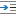

DITA Map Document Type
Oxygen XML Web Author includes a variety of features that were designed specifically for DITA Map document types. Most of these features can be accessed through actions available on the DITA Map framework-specific toolbar or from the contextual menu.
DITA Map New Document Templates
Oxygen XML Web Author includes a variety of predefined new document templates that make it easy to create various types of DITA documents with some of the document structure already present. When you use the New button in the Dashboard for your particular file repository, a dialog box is displayed where you can choose from various types of new document templates, including Map, Bookmap, Subject Scheme, and other types of DITA maps.
DITA Map Pane
Oxygen XML Web Author includes a DITA Map pane that presents a DITA map as a hierarchical tree. You can also use this to open any of the topics or submaps within its hierarchy. For more details, see DITA Map Pane.
DITA Map Toolbar Actions
The following default actions are readily available on the toolbar when editing a DITA map document in Oxygen XML Web Author:
- DITA Map Display Mode Drop-Down Menu
-
This drop-down menu offers three possibilities for choosing how the DITA map is displayed:
- View Topic References
- Display the map with the topic references shown.
- View Topic Titles
- Displays the map with both titles and topic references shown.
- View Topic Content
- Displays the map with all of the topic content expanded in one document
without having to open each topic individually to see the content. This mode
is helpful for previewing the entire content of a DITA map.Restriction: By default, to prevent performance issues, the View Topic Content mode is not available if the DITA map contains more than 50 references. This amount can be configured with the
topic.content.refs.limitoption. - Edit Topic Content (BETA)
- Displays the map with all of the topic content expanded in one document.
Unlike View Topic Content, the topic content is
editable.Note: This editing mode may not be available if the file server connector does not support it. For example, with the built-in connectors, this action is available for all types of Git repositories, except for BitBucket Server.
 Insert New
DITA Resource
Insert New
DITA Resource- Opens a dialog box where you can choose the type of DITA document to create and inserts a reference to it at the current position within the map.
- Insert Topic Reference
- Opens a dialog box where you can choose a topic and inserts a reference to it at the current position within the map.
 Define
Variable (as DITA Key)
Define
Variable (as DITA Key)- Opens a dialog box where you can choose the name and value for a variable and inserts the variable definition at the current position within the map.
- Insert Relationship Table
- Inserts an empty relationship table at the current position.
- Insert Relationship Row
- Inserts a new table row with empty cells. The action is available when the cursor position is inside a relationship table.
 Insert
Relationship Column
Insert
Relationship Column- Inserts a new table column with empty cells after the current column. The action is available when the cursor position is inside a relationship table.
 Delete
Relationship Column
Delete
Relationship Column- Deletes the table column where the cursor is located.
 Delete
Relationship Row
Delete
Relationship Row- Deletes the table row where the cursor is located.
- Move Up
- Moves the selected node up one position on its same level.
 Move
Down
Move
Down- Moves the selected node down one position on its same level.
 Promote
Promote- Moves the selected node up one level to the level of its parent node.Note: When promoting a node in a bookmap, the node type may change to prevent validation errors. For example, a promoted topicref is changed to a chapter.
- Demote
- Moves the selected node down one level to the level of its child nodes.Note: When demoting a node in a bookmap, the node type may change to prevent validation errors. For example, a demoted chapter is changed to a topicref.
- Insert Special Character
- Opens a dialog box that allows you to select from a large variety of special characters to insert at the current cursor position. The various types of characters include symbols, emoticons, punctuation, and many more.
DITA Contextual Menu Actions
There are various actions that are available in the contextual menu when editing DITA map documents in Oxygen XML Web Author:
- Add Comment
- Allows you to insert a comment on a selected fragment of text. After you add a comment, the content where the comment was added is highlighted in the document and you can see the comment by hovering over the highlighted content or in the Review view.
- Edit Comment (Available when invoked on a comment)
- Opens the Edit Comment dialog box that allows you to edit the selected comment.
 Remove Comment (Available when invoked on a
comment)
Remove Comment (Available when invoked on a
comment)- Removes a selected comment.
 Edit
Attributes (Alt+Enter)
Edit
Attributes (Alt+Enter)- Opens the Attributes tab in the panel on the right side of the screen where you can add or edit attributes.
 Surround
With
Surround
With- Allows you to choose a tag to enclose selected content.
- Insert submenu
-
This submenu includes the following insert actions that are specific to the DITA Map framework:
- Insert New
DITA Resource
- Opens a dialog box where you can choose the type of DITA document to create and inserts a reference to it at the current position within the map.
- Insert Topic Reference
- Opens a dialog box where you can choose a topic and inserts a reference to it at the current position within the map.
- Define Variable (as DITA Key)
- Opens a dialog box where you can choose the name and value for a variable and inserts the variable definition at the current position within the map.
- Insert Element
- Opens a content completion window where you can choose an element to insert at the current position.
- Relationship Table submenu (Available when invoked on a relationship table)
- Presents various actions for configuring the relationship table, such as adding or deleting rows and columns.
- Generate IDs
-
Oxygen XML Editor generates unique IDs for the current element (or elements), depending on how the action is invoked:
- When invoked on a single selection, an ID is generated for the selected element at the cursor position.
- When invoked on a block of selected content, IDs are generated for all top-level elements.
Note: The Generate IDs action does not overwrite existing ID values. It only affects elements that do not already have an@idattribute.  Paste Special
Paste Special-
Opens the Paste Special dialog box where you to choose how to paste copied content. There is a preview pane inside the dialog box where you have to paste the copied content either by using the Ctrl + V (Command + V on OS X) keyboard shortcut or by selecting Paste from the contextual menu. Then you can choose to paste it into your document with one of the following choices:
- Smart Paste - Oxygen XML Web Author will paste the copied content while trying to preserve its structure and if the current location is invalid, Oxygen XML Web Author will attempt to find a possible solution.
- Paste as Text - The copied content will be pasted as text content.
- Paste as XML - Copied content that is considered to be valid XML will be pasted with its XML structure preserved.
To perform the paste operation, click the Paste button at the bottom of the dialog box.
- Folding Submenu
-
 Toggle Fold (or simply click on the /
Toggle Fold (or simply click on the / arrow in the editing panel)
arrow in the editing panel)- Toggles the state of the current fold.
- Collapse Other Folds
- Folds all the elements except the current element.
 Collapse Child Folds
Collapse Child Folds- Folds the child elements that are indented one level inside the current element.
 Expand Child Folds
Expand Child Folds- Unfolds all child elements of the currently selected element.
 Expand
All
Expand
All- Unfolds all elements in the current document.
- Rename Element
- Opens a content completion window where you can choose an element to rename the element at the current position.
- Delete Element Tags (Alt+Shift+X)
- Deletes the tags of the closest element at the current cursor position.
Special Icons
- - This icon is displayed if a topic reference has
the
@tocattribute set to no. - - This icon is displayed if a topic reference has
the
@printattribute set to no.